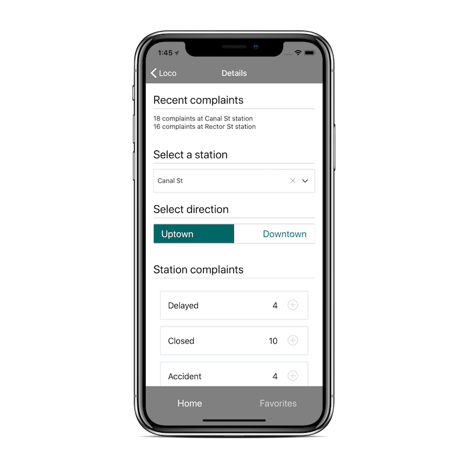
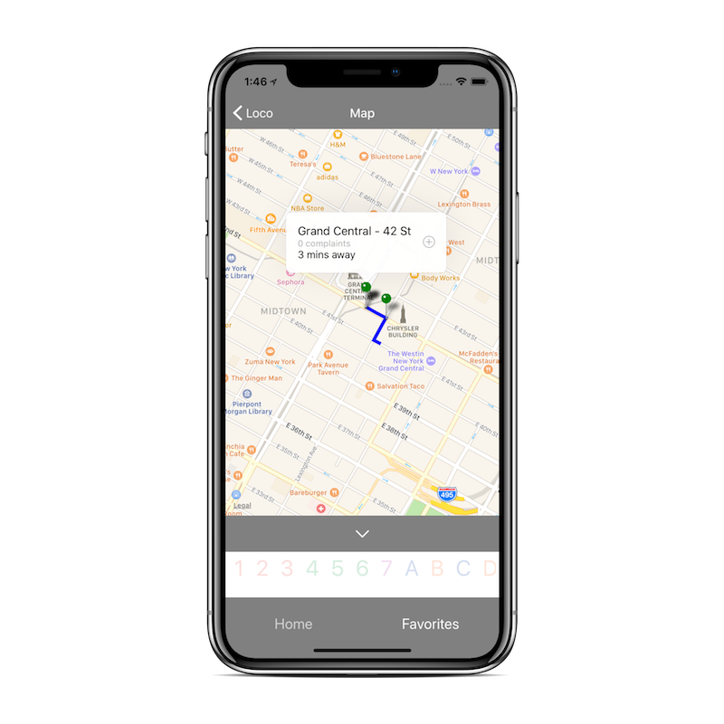
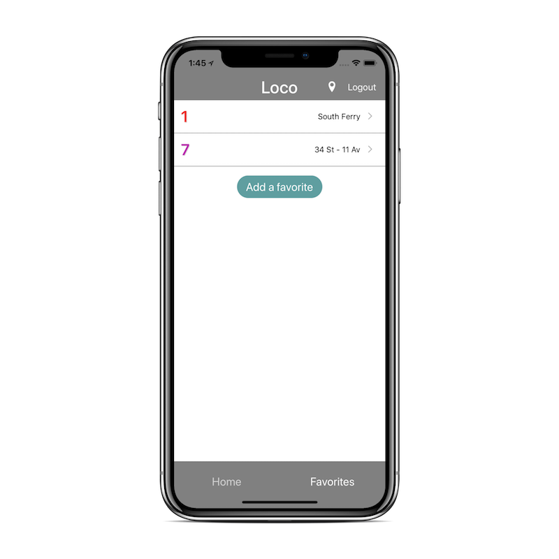

Loco
Your Commute at a Glance
Every train and its official status on one page.
Plan Ahead
Know the status of your trains before you get to the platform. See what other people are saying.
Find Your Way
Avoid the delays. Check nearby stations and see which ones are operating before you get there.
Stay in the Loop
New York lives on a routine. Track your frequented routes to quickly view problems.
Connect with your community, see what's happening now
Our Mission
No more unexpected surprises.
New York’s subway now has the worst on-time performance of any major rapid transit system in the world, according to data collected from the 20 biggest. - New York Times
We were inspired to build Loco after The New York Times wrote this piece. We've all been there, waiting, patience wearing thin as the train we needed seems to have gotten lost. You begin to wonder if you could make it to another station and try a different route. But what if the train comes right after you leave? So you wait, hoping for some announcement to let you know what's happening. Well, we got tired of waiting, and we now know that announcement is never going to come. Instead, we saw an opportunity to connect people with the amazing people around them, so we took it.
With New York City’s transportation system in a state of crisis, the head of the Metropolitan Transportation Authority said on Thursday that it was time for City Hall to contribute more money to repairing and maintaining the subway system that is the lifeblood of the city. - New York Times
New York City is a magical place, the best city in the world, a global landmark of wealth and opportunity. Unfortunately, we are plagued with one of the worst transit authorities in the world. A large part of our roadmap is the ability to provide the MTA with statistics identifying problem areas. What better source than the people who are riding the MTA? With our data, user complaints could be modeled into usable data to help the MTA build a more efficient system. Oh, and don't worry about your personal information. We don't track who makes the complaints, just that a complaint was made.
Improving life for urban Americans
Loco Tech
How we built it.
Our Front End

Cross-platform and mobile React clients deployed on Expo, powered by the latest front-end technology from Facebook. We prefer the cutting edge.
Our Realtime


Powered by Express/Node and deployed on Digital Ocean, one of the most trusted deployment platforms. Redis and Mongo provide a powerful, fast, and flexible data persistence for our users.
Our Back End

Static data is fetched from public transit data and persisted on our AWS-hosted API, backed by MYSQL. We conform with GTFS standards to maintain expandability.
With gas prices rising and family budgets strained, more commuters are looking for efficient ways to get to work without a car. But are America's transit networks up to the task? - Time
The problem faced by many in American cities (not just New York) is painfully slow and inconsistent public transit. In Jalopnik's piece on the worst transit systems in the world, America had over five entries. The other 5 cities listed were all in different countries. The American cities are not isolated to any particular region, rather they range from coast to coast. One day, we want to help Americans across the country, a dream that impacted every step of our design process.
How to download
- Download the Expo.io app on your iPhone or Android device.
- Use the Expo.io app with our QR code, or enter @kwakles/mobile in the client.
- Ready to view! You will need to login to add reports.
A partial web client is available to view here. This is still very much a WIP.